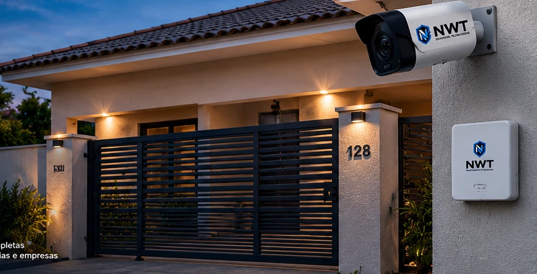
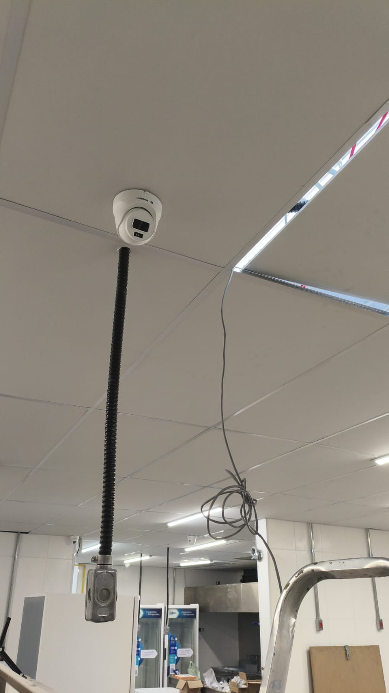
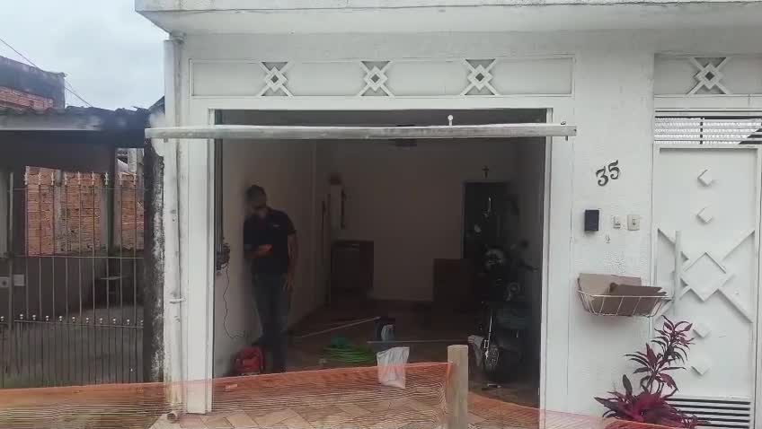
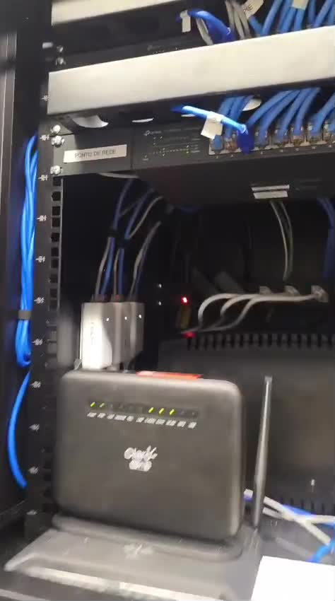
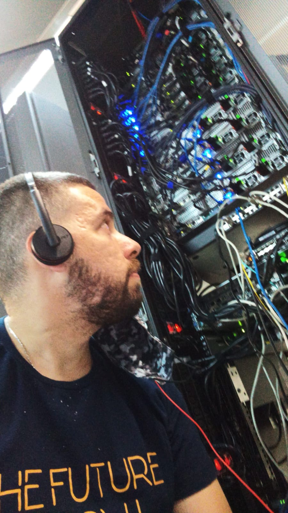
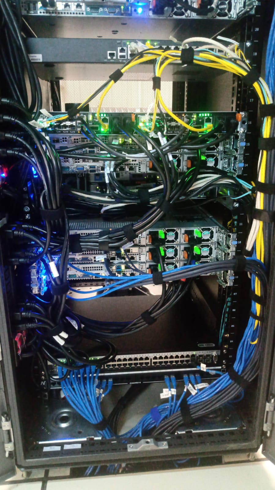
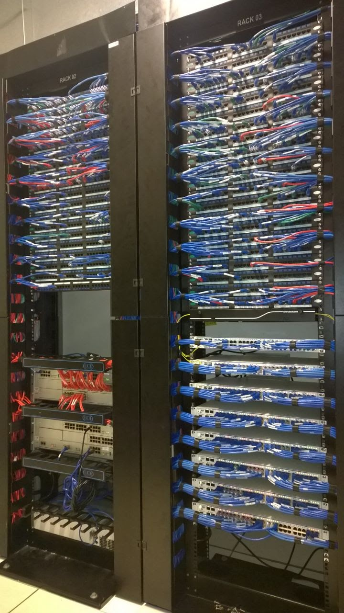
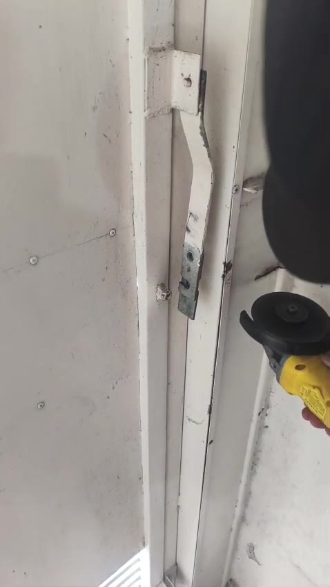

NWTSEGURANÇA & TECNOLOGIA
CFTV E CÂMERAS
Monitoramento, acesso remoto e imagens em alta definição.
- Câmeras IP e analógicas
- Acesso remoto pelo celular
- Gravação local ou em nuvem
- Projetos residenciais e comerciais

SUA CASA E SUA EMPRESA MAIS SEGURAS
Proteção, conectividade e automação para o seu dia a dia.
NOSSAS SOLUÇÕES
Soluções completas para proteger, automatizar e conectar sua casa ou empresa.
Monitoramento, acesso remoto e imagens em alta definição.
Motores, controles, instalação e manutenção.
Sensores, centrais e sirenes para mais proteção.
Wi-Fi, roteadores, cabeamento e redes empresariais.
Proteção perimetral para residências, comércios e empresas.
NOSSO COMPROMISSO
Mais do que equipamentos, oferecemos soluções pensadas para a segurança e a tecnologia do seu ambiente.
Entendemos a necessidade de cada cliente para indicar a solução mais adequada ao seu espaço.
Câmeras, alarmes, automação de portões e redes de TI em projetos residenciais e comerciais.
Serviços técnicos de instalação, configuração e manutenção dos sistemas atendidos pela NWT.
Veja fotos e vídeos dos serviços realizados e conheça, na prática, nosso trabalho.
Conhecer projetos →NWT EM AÇÃO
Conheça alguns dos nossos serviços reais em automação de portões, câmeras e infraestrutura de TI.

Instalação de câmera de segurançaCâmera instalada em ambiente interno.
Automação de portão basculanteProjeto de portão automatizado em imóvel residencial.
Equipamentos de redeInfraestrutura e conexões em rack técnico.
Manutenção de infraestrutura de TIAtuação técnica em equipamentos de rede.
Organização de rack de redeEquipamentos e cabeamento de rede em operação.
Cabeamento estruturadoDistribuição e organização de conexões de rede.
Manutenção de portão basculanteDetalhe técnico de componentes do portão.SOBRE A NWT
A NWT Segurança & Tecnologia nasceu da experiência de quem entende que tecnologia vai muito além de instalar equipamentos: ela precisa resolver problemas, trazer segurança e facilitar o dia a dia das pessoas.
Com mais de 14 anos de experiência na área de tecnologia, infraestrutura e operações de TI, construí minha trajetória atuando em ambientes corporativos exigentes, lidando com desafios técnicos, gestão de incidentes e soluções que precisam funcionar de verdade.
A NWT surgiu com o propósito de levar essa experiência para residências, comércios e empresas, oferecendo serviços de segurança eletrônica, CFTV, automação de portões, alarmes, redes e infraestrutura tecnológica.
Acredito em um trabalho bem executado, atendimento transparente e soluções adequadas à necessidade de cada cliente. Mais do que instalar equipamentos, meu compromisso é entender cada cenário, identificar a melhor solução e entregar um serviço com responsabilidade, qualidade e atenção aos detalhes.
A NWT representa a união entre conhecimento técnico, experiência prática e o compromisso de construir relações de confiança com cada cliente.
NWT Segurança & Tecnologia — Proteção, conectividade e automação.
FALE COM A NWT
Proteja sua residência ou empresa com soluções em câmeras, alarmes, automação de portões e infraestrutura de TI. Conte o que você precisa e solicite seu orçamento.
⌖ Embu das Artes e região · WhatsApp: (11) 95856-8951